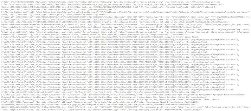
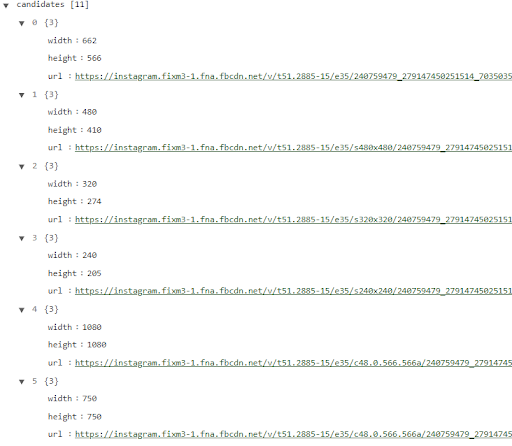
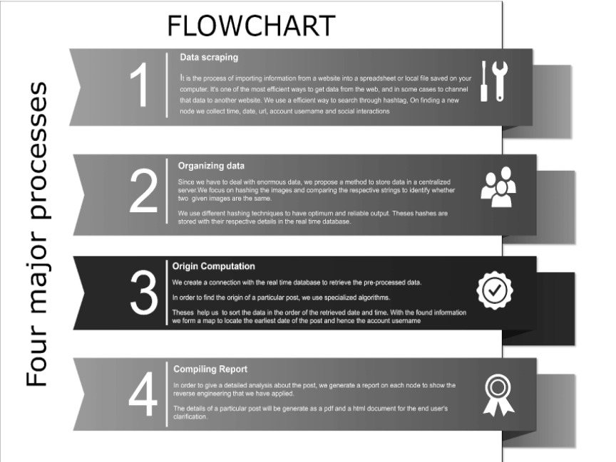
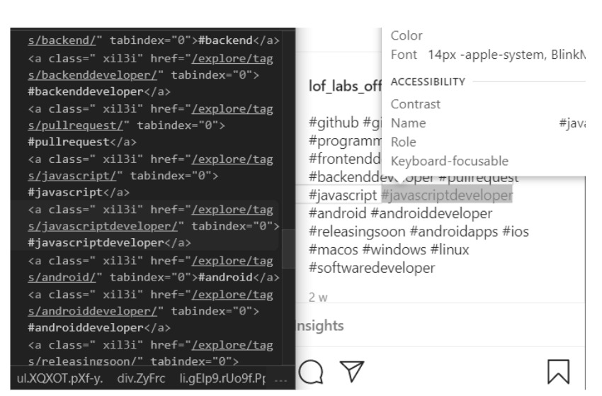
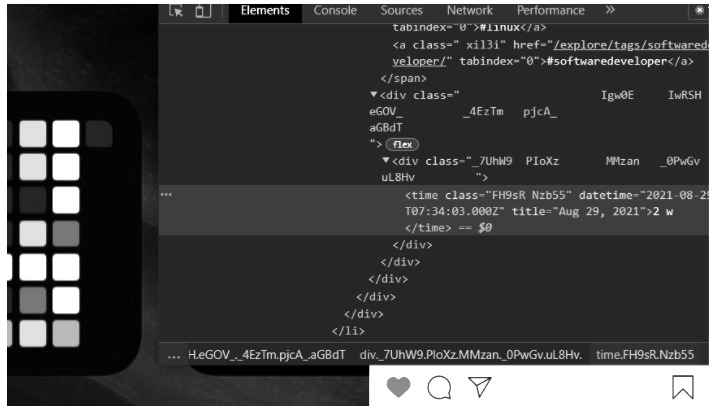
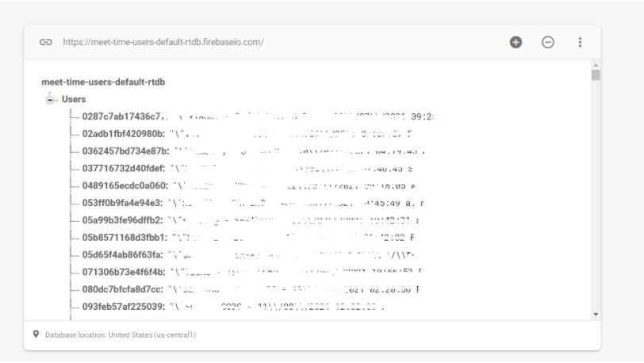
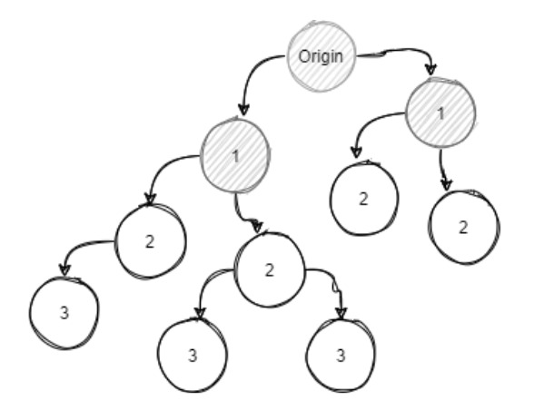

TRACING ORIGIN OF SOCIAL MEDIA POST
TEAM NAME: Origin Retreivers
TEAM MEMBERS: Deepti A, Dominic Walter T, Ahamed Aamina Banu Y, Saratha Selvi K, Aarka Christal Sujaa G
Problem Statement : (INTL-DA-08)
Build a solution that is able to track the origin of a given social media post (provided as an input URL or content) and identify the account, along with its details, which posted it first on that particular platform
Presentation video1. Abstract:
Images/ videos of individuals, taken with or without consent and often of a sexually-explicit nature, are posted on various social media platforms as a tactic of abuse by perpetrators with the intent to harass, impersonate, humiliate and cause harm. Such content has a tendency to instantly become viral and causes a lot of distress to the victim. Given a piece of text, image, or video snippet as input, we build a solution that can identify the person who was the first one to post it online on a particular social media platform. We give a detailed report on how we reached a particular result. This project will have a high real-time use as it solves one of the major problems faced by our society.
2. Introduction:
We tend to take advantage of the vast and interactive platform of social media, but we forget to notice the downside of it. Nowadays, even a single post can ruin a persons life, and yet we have failed to stop it. So our project will be a milestone in making peoples lives better. Every day, we see hundreds of messages forwarded across the globe, and it is almost impossible for us to find the origin of it. Once any content is released, it is shared, re-posted, and forwarded many times than we can imagine. This becomes a vulnerability. Hence, we are proposing a way to find the origin of any post. Thus, we find the user responsible for releasing abusive content. Our project uses image hashing to identify and compare the content that is retrieved from any media. Further, using a real-time database the information is organized and stored. Finally, the data is mapped to its origin for the first time it was ever posted.
3. Tech Stack:
Language: Python 3.0
Libraries: ImageHash, Ipyplot, Numpy, Pandas, BeautifulSoup
Python 3.0
Python is an interpreted high-level general-purpose programming language.
Its design philosophy emphasizes code readability with its use of significant indentation.
Its language constructs as well as its object-oriented approach aim to help programmers write clear, logical code for a small and large-scale project.
Python 3 is a new version of the language.
We considered python due to its richness in libraries and the flexibility offered by it.
Python also shines bright in the data science area as it has numerous built-in features which makes it easy to tackle the needs.
Libraries:
ImageHash
Image hashes tell whether two images look nearly identical. This is different from cryptographic hashing algorithms where tiny changes in the image give completely different hashes. In image fingerprinting, we actually want our similar inputs to have similar output hashes as well. The image hash algorithms (average, perceptual, difference, wavelet) analyze the image structure on luminance (without color information). The color hash algorithm analyses the color distribution and black & gray fractions (without position information).
Ipyplot
IPyPlot is a small python package offering fast and efficient plotting of images inside ipython Notebooks cells. It's using IPython with HTML for faster, richer, and more interactive ways of displaying big numbers of images.
NumPy
NumPy stands for Numerical Python. It is a Python library used for working with arrays. It also has functions for working in the domain of linear algebra, Fourier transform, and matrices. It is an open-source project and we can use it freely. In Python, we have lists that serve the purpose of arrays, but they are slow to process.NumPy aims to provide an array object that is up to 50x faster than traditional Python lists.
Pandas
Pandas is a Python package providing fast, flexible, and expressive data structures designed to make working with relational or labeled data both easy and intuitive. It aims to be the fundamental high-level building block for doing practical, real-world data analysis in Python. Additionally, it has the broader goal of becoming the most powerful and flexible open-source data analysis/manipulation tool available in any language
Scikit-learn
Scikit-learn (Sklearn) is the most useful and robust library for machine learning in Python. It provides a selection of efficient tools for machine learning and statistical modeling including classification, regression, clustering, and dimensionality reduction via a consistent interface in Python.
Tensor Flow
TensorFlow is an open-source artificial intelligence library, using data flow graphs to build models. It allows developers to create large-scale neural networks with many layers. TensorFlow is mainly used for: Classification, Perception, Understanding, Discovering, Prediction and Creation.
BeautifulSoup
Beautiful Soup is a library that makes it easy to scrape information from web pages. It sits atop an HTML or XML parser, providing Pythonic idioms for iterating, searching, and modifying the parse tree.
4. Data Analysis - Determining Content Severity
4.1 Overall design and Flow:
Our algorithm is divided into four stages as follows:
- Creating and deploying agents.
- Data scraping / Sanitising
- Rating content with ML models
- Compiling Report/ Rendering warnings.
4.1.1 Creating and Deploying agents
4.1.1.1 Creating agent:
Severity rating process for a particular topic is handled by the agent that is assigned to it. An agent is a bot that uses models to classify posts automatically and stores them in a centralised database. Users can create multiple agents at the same time for different topics. They take three main parameters : Topic, Collection rate, Unique ID.
4.1.1.2 Deploying Agents:
Agents can be deployed after initialization, they retrieve the latest posts on the given topic, process the content, comments and other parameters (Platform specific features), assign severity value to it and store details to the database.
4.1.2 Data Scraping:
4.1.2.1 Choosing Parameters (Hashtags):
The content rating can be done after narrowing the search, with the help of Hashtags. A hashtag is a label used on social media sites that makes it easier to find posts or information with a theme or contains specific content. It is created by including the symbol “#” in front of a word or words without spaces. Hashtags simplify the process – Searching a hashtag pulls results for each post .Hashtag helps us to reach the target posts.
4.1.2.2 Retrieving data:
Agents use native APIs of the respective social media platforms to directly get responses. The received response will be in a well structured JSON format.
4.1.2.3Sanitising data:
Necessary data is filtered from the raw JSON type response and will be sent for getting severity rating.
4.1.1.3 Rating content with ML models
The collected data is processed with our mission learning algorithms. They classify a topic in three different ways based on the severity. Safe, moderate and vulgar, The agents display a safe green symbol, a moderate yellow symbol and a vulgar red which blurs the content of the post depending on the return value of our ml model.
4.1.1.4 Compiling Report/ Rendering warnings
The user is given warnings in case of any exception. A compiling report is generated for the user reference.It contains all the necessary details such as the date, time, profile name, account username and so on. The details will be generated as a html file.
5. Post Searching(Posts, Reposts, Edits)
5.1 Overall design:
Our algorithm is divided into four stages as follows:
- Data scraping
- Sanitizing & Organising data
- Origin Computation
- Compiling Report.
The flow of Algorithms:
Example : 5.1.1 Data Scraping:
5.1.1.1 Effective way of searching:
In order to make scraping for images more effective, we have developed an algorithm that uses hashtags ( # tags ) to navigate to the main page and narrows the scope of the search, this helps in reducing the waste of computational power spent on a broader search. However, if the algorithm cannot find any hashtags associated with the given post, it can get manual input from the user at the time of triggering else will launch a broader search based on location and other aspects

In this example, we show how to extract hashtags using developer console, in the actual project this will be automated.
5.1.1.2 Data retrieved:
On exploring every new node we collect the following data for processing
- 1.Time and date of the post (if the post is relatively old, only the date)
- 2.The URL of the image involved in the post
- 3.Account username
- 4.Social interactions (number of likes and comments)
- 5.Hashtags used (or the equivalent - depending on the social media platform)

In this picture, we show how to retrieve time and date from an Instagram post using chrome developer console, the same will be automated in the actual project. We can extract time accurately up to minutes and sometimes even the exact second can be retrieved.
5.1.2 Sanitizing & Organising data
To process the data we collect, we first should organize the data. Considering the vast amounts of data we need to process, we build the solution in such a way that we collect data to a centralized server. This enables distributive computing, by sharing workloads between an array of computers.
Our scheme is as follows :
5.1.2.1 Hashing:
To compare images between posts, we hash the images and compare the hash values, we designed special algorithms that use different hashing techniques to conclude whether two images are edits of the same post
Example: Hash values of an image with various algorithms
5.1.2.2 Database:
The temporary data which are processed by the model will be stored in the temp folder. It will contain the scrapped post, the hash details and data for origin computation. Initially selenium API scraps posts, which are stored in the folder, further the content is narrowed down using our hashing algorithm.
We are using Google Firebase Realtime Database as the centralized database solution for storing/retrieving node data and hash values for computation. This enables us to split work between different computers, improving the overall performance of our solution
Example: Firebase console RTDB

5.1.2.3 Exporting node data:
Node data can be exported into JSON files after exploration directly. These datasets can be used for other analytics, and further analysis of the case depending upon the initial report and situation.
5.1.2.4 Data structure:

Explanation:
Root: Type
String Content:URL of the given post
Nodes
Type:JSON
Content: a collection of all the scraped posts
Hash value: (with serial number)
Type:JSON
Content:Data scrapping from a post represented by its unique hash
5.1.3 Origin Computation:
To traceback to the original post, we have designed the algorithm as follows
After retrieving data from RTDB, hashes will be sequentially processed to sort it in chronological order based on the time and date, in case of unavailability of certain data, it will be computed based on other parameters like the number of comments, shares, likes, and etc, creating a tree structure representing the flow of posts. Eventually, the start will be converging to fewer nodes. We then calculate the probability of being the origin for every node based on parameters other.
Example:
5.1.4 Report
After computation to share the conclusions, we procedurally generate an HTML document and a pdf. The HTML document contains a very detailed flow of posts and data represented by every node in the network in a human-readable format. It will also contain additional data retrieved by the system and tooltips justifying the node's position in the graph. The Pdf file will have a summary of the search and conclusions, without displaying any data.
5.2 Accuracy and time:
In order to trace back to the origin, we need to search, index, and profile all the images under some constraints which take a tremendous amount of time and computation power, to tackle this we created different algorithms that balance the time and accuracy into different proportions, discussed more on the methods in the following section.
Accuracy:
we have estimated the accuracy of the most accurate method of this solution as at least 89%. The actual numbers can only be calculated on the completion of this project. It also depends greatly on the hashing algorithms we use, so in order to improve the accuracy of the algorithms, we sanitize the input image we provide for hashing, more details are mentioned in the following sections.
5.3 Methods
Different methods we provide:
- 1.Fastest Method
- 1.1 Looks for the exact image, audio, video file - fails with edits and compression
- 1.2 Uses a single hashing algorithm
- 1.3 Fastest of all three methods
- 1.4 Accuracy is less
- 2 Normal Method
- 2.1 Uses two Hashing Algorithms
- 2.2 Validation of search and computation
- 2.3 Can tolerate minor compressions and edits
- 2.4 More accurate than the previous method
- 3. Deep search
- 3.1 Most accurate
- 3.2 Takes more time relatively
- 3.3 Accounts major edits and compression
- 3.4 Uses several hashing techniques to validate results
- 4.Additional Methods (Optional):
- 4.1 Search part of a picture (if the clue is suspected to be cropped picture)
- 4.1.1Adds to additional time in computing results
- 4.1.2A detailed report will be included with every branch
- 4.2Grid Verification: splits the image into 3x3 grid and algorithm proceeds individually with every piece, this increases the chance of matching the edited pictures
5.4 Report of the search
1. HTML file:
- 1.1. Display the processed information.
- 1.2. create a dynamic interactive graph to follow the flow of posts
- 1.2.1. On hovering, it exposes the user to further data
- 1.3.The nodes are displayed as cards
- 1.3.1. It shows the navigation of posts
2. Pdf-summary:
It contains a detailed report based on the algorithm executed. It gives the conclusion, final result of the search to the end-user. This does not expose any intermediate node data or branch decisions.
References:
1.Google2.Youtube
3.Quora
4.https://www.python.org/doc/
5.https://en.wikipedia.org/wiki/Python_(programming_language)
6.GeeksforGeeks | A computer science portal for geeks
7.Codepen.io